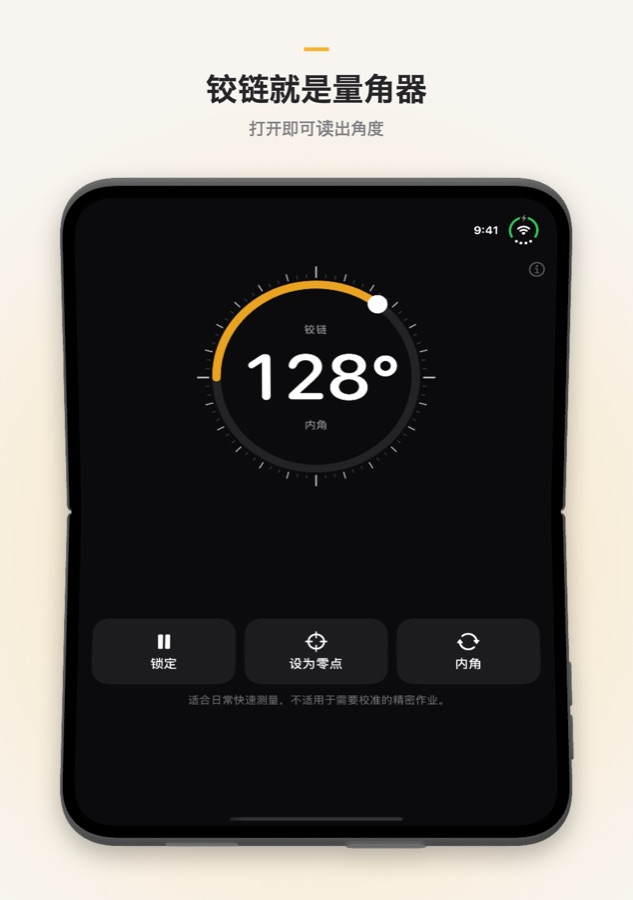
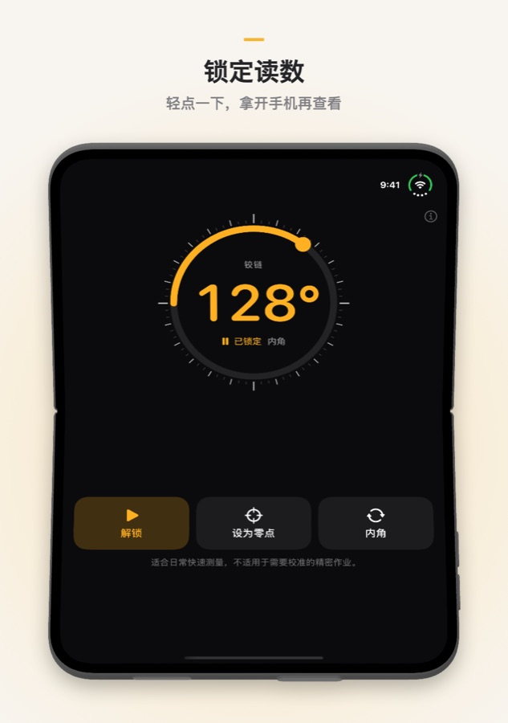
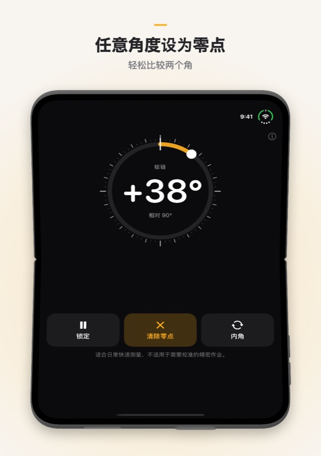

Fold Angle
折叠 iPhone 本来就知道自己打开了多少度。Fold Angle 把铰链变成量角器：把手机放进墙角、贴着门或卡在箱子边缘，即可读出两半之间的角度。在其他 iPhone 和 iPad 上可用作倾角仪。
需要 iOS 17 或更高版本。
下载


支持
有问题、发现错误或需要帮助？欢迎联系我们，每封邮件我们都会阅读。
常见问题
- 支持哪些设备？
Fold Angle 为 iPhone Duo 打造，可直接读取铰链角度。在其他 iPhone 和 iPad 上，它借助运动传感器用作倾角仪，显示设备偏离水平的角度。 - 如何保留读数？
轻点锁定即可固定数值，拿开手机后再查看。轻点解锁回到实时读数。轻点两下数字也可以。 - “设为零点”有什么用？
把当前角度设为新的零点，方便比较两个角或测量门打开了多少。轻点清除零点回到绝对角度。 - “内角”和“外角”是什么？
内角是两块屏幕之间的角度，外角是折痕背面的角度（360° 减去内角）。轻点按钮即可切换。 - 平放时显示约 2°，而不是 0°。
在倾角模式下，摄像头凸起会把手机一端垫高。先在平面上轻点设为零点再测量，或把手机屏幕朝下放置。 - 感觉不到震动。
Fold Angle 每 15° 轻震一次，正好 90° 时重震一次。如果完全没有感觉，请检查 设置 → 声音与触感 → 系统触感反馈 是否已开启。 - 精度如何？
它适合日常快速测量，不适用于需要校准的精密作业。需要准确结果时，请用量角器或水平仪确认。 - 会收集我的数据吗？
不会。Fold Angle 没有账户、没有服务器，也不进行任何网络请求。传感器读数只留在你的设备上。
截图



法律信息
隐私政策
最后更新： 2026 年 10 月
简介
Fold Angle 秉持一个简单的原则：你的数据属于你。本隐私政策说明 App 会访问哪些信息以及如何处理。简而言之，我们不会收到任何数据。
传感器
Fold Angle 读取铰链角度（iPhone Duo）和运动传感器（其他设备），仅用于在屏幕上显示角度。这些读数在你的设备上处理，绝不会被存储、上传或共享。
不收集数据
我们不收集、存储、追踪或处理任何个人信息。App 不需要账户或任何形式的注册。
无需联网
Fold Angle 完全离线运行，不进行任何网络请求。
购买
所有购买均由 Apple 通过 App Store 处理。我们不会收到你的 Apple ID、付款方式或任何其他付款信息。
第三方服务
Fold Angle 不使用任何第三方分析、广告或追踪服务，不与任何第三方共享数据。
儿童隐私
由于不收集任何个人数据，Fold Angle 符合《儿童在线隐私保护法》（COPPA）及全球类似法规。
政策变更
我们可能会不时更新本隐私政策。变更自发布之时起生效。建议你定期查看本页面。
联系我们
如对本隐私政策有任何疑问，请联系：support [at] hoshinosoftware [dot] com
服务条款
最后更新： 2026 年 10 月
接受条款
下载或使用 Fold Angle 即表示你同意受本服务条款约束。如不同意，请勿使用本 App。
许可
Hoshino Software 根据本条款及 Apple 的 App Store 服务条款，授予你在 Apple 设备上使用 Fold Angle 的个人、不可转让、非独占许可。
允许的使用
你只能将 Fold Angle 用于合法目的，并同意不以任何违反适用法律法规的方式使用本 App。
并非精密仪器
Fold Angle 用于日常快速测量。读数取决于设备的传感器，可能存在 1° 或更大的误差。请勿在误差可能造成伤害、损坏或损失的场合依赖本 App。
无保证
Fold Angle 按“原样”提供，不附带任何明示或默示的保证。我们不保证本 App 没有错误、不会中断或适用于任何特定目的。
责任限制
在适用法律允许的最大范围内，Hoshino Software 不对因使用或无法使用 Fold Angle 而产生的任何直接、间接、附带、特殊或后果性损害承担责任。
条款变更
我们可能会不时更新本服务条款。变更发布后继续使用本 App，即表示你接受修订后的条款。
适用法律
本条款受 Hoshino Software 经营所在司法管辖区的法律管辖。
联系我们
如对本服务条款有任何疑问，请联系：support [at] hoshinosoftware [dot] com